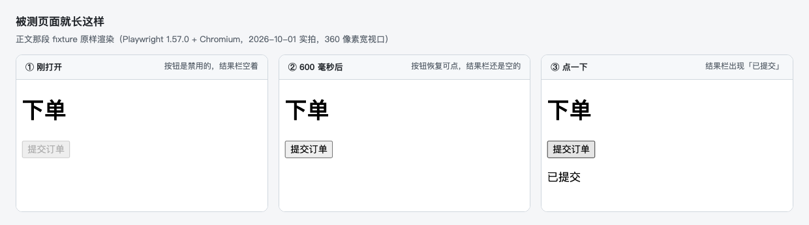
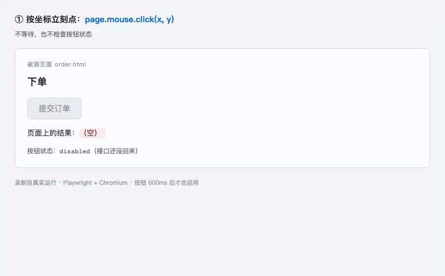
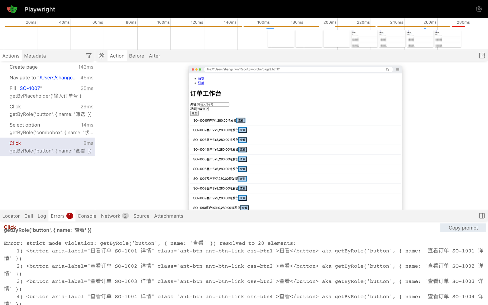
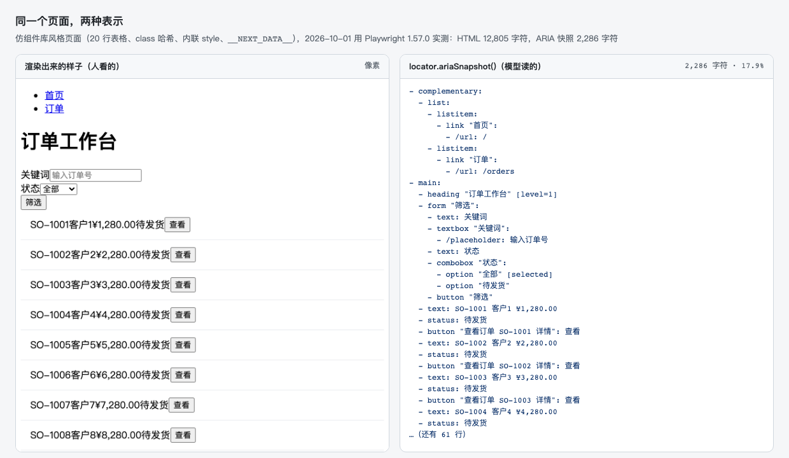

Playwright 赢的不是测试：它赢的是“被调用的能力”
Contents
如果你这两年留意过前端测试圈，大概会注意到一件事：新项目的端到端测试，默认都写成 Playwright 了。可这件事有点说不通：Cypress 也会自动等待，它的检查项甚至比 Playwright 还多，代码读起来也更舒服。
所以我想搞清楚一个问题：这一轮换代，为什么是 Playwright？
趋势本身很清楚：2025 年的行业调查里，它的使用率第一次超过 Cypress（50% 对 47%），而最新的周下载量是它的 17 倍。但数字只能说明趋势，说明不了原因。
功能表也回答不了，得往下一层看：那一行 click() 在真的落下之前，究竟检查了什么。我拿一颗 600 毫秒之后才可点的按钮当尺子，把它拆成四道关：怎么找到元素、怎么判断能点、怎么把动作送进浏览器、失败之后留下什么。四道关看完，再回头说这两年的事。
被测的页面很小，存成 HTML 双击就能打开：一个标题、一颗 600 毫秒之后才可点的按钮、一行结果。
1 |
|
判断成没成功只看一件事：最后那行 <p id="result"> 里有没有出现「已提交」。

被测页面就长这样（Playwright 1.57.0 + Chromium，2026-10-01 实拍，360 像素宽视口）：同一个脚本的三种状态，下面四道关对着的都是这一张页面同一颗按钮，三种点法，结果却各不相同：
1 | await page.mouse.click(320, 210); // ① 按坐标点 |
只有 ③ 会等。① 什么也没发生：按钮还禁用着，浏览器把那次鼠标事件吞了。② 结果栏变绿了，可那其实是假的，按钮当时根本点不动。这篇文章里的四道关，拆的就是 ③ 的那一行。
一、第一关：它怎么知道“找到了”
我们习惯说“拿到一个元素”，但在 Playwright 里，page.getByRole('button', { name: '提交订单' }) 拿到的不是一个元素，而是一句描述。官方管它叫 locator，定义是“一种在任何时刻都能找到元素的方式”（见 Locators）。
这句话听着像修辞，其实有个很实在的后果：每次要动手之前，它会拿这句描述重新解析一遍。所以我那个实验才有意义。把 class 从构建哈希 btn-primary-9f2c1a 改成 btn-primary-4b8e77，模拟一次重新构建，page.click('.btn-primary-9f2c1a') 当场超时，报 Timeout 1200ms exceeded；那句按角色和名字写的描述照样命中。
解析出来之后其实还有一道更严的检查：必须恰好命中一个。这就是“找到”在这套实现里的定义。一句描述如果同时匹配到 20 个元素，它不会随便挑一个，而是停下来告诉你匹配到了 20 个。（这个决定的好处，第四关会看到。）
那“角色是 button、名字是提交订单”这些词从哪儿来？来自浏览器的可访问性树：浏览器会把页面另外解析成一棵树，每个节点带三样东西，角色（role）、名字（name）和状态（state）。屏幕阅读器读的就是它，getByRole 读的也是它，第六节那个 ARIA 快照还是它。
原生标签自带隐式的 role（<button>、<a href>、<input type="checkbox"> 都有），自定义组件就得自己补上：aria-label、aria-labelledby，或者 <label for>。我拿一个只用 <div onclick> 拼的按钮试过：getByRole('button').count() 是 0，它在快照里降级成了一行普通文本；补上 role="button" 之后才是 1。
所以第一关交出来的东西，其实是一句“此刻唯一命中的描述”。反过来，那种“真的抓到一个元素”的用法（ElementHandle）被官方标上了 Discouraged。
二、第二关：它怎么判断“能点了”
找到了不等于能点。这一关是 Playwright 最出名的地方，官方叫 actionability，原话是：
It auto-waits for all the relevant checks to pass and only then performs the requested action.
翻成人话：动手之前，它会把下面四条逐个等到成立。
| 条件 | 官方定义（人话版） |
|---|---|
| Visible | 有非空 bounding box，且不是 visibility: hidden；opacity: 0 算可见 |
| Stable | 连续两帧 bounding box 不变（还在动的元素不点） |
| Receives Events | 命中测试时这个点上真的是它，不是被别的元素盖住 |
| Enabled | 没 disabled，祖先也没有 aria-disabled |
四条里我最喜欢第二条。“连续两帧不变”这种抠到帧的定义，等于把老工程师嘴里那句“等它别动了再点”直接写成了代码。这一关干的就是这件事：把人的经验变成可判定的条件。
回到那颗按钮，这一关跑完是 858 毫秒。它倒不是睡得久，是一直在等条件成立。
这里得补一句公道话，不然容易被读成 Playwright 的独家本事：自动等待其实不是它发明的。Cypress 早就有，检查项比这四个还多（多出 detached、readonly、covering 三项），它也会盯着 DOM 不断重跑查询（官方原文：*”Cypress will watch the DOM - re-running the queries that yielded the current subject…”*）。我实测过，一条完全不带等待的 Cypress 用例照样通过，耗时 846 毫秒，和 Playwright 的 858 毫秒几乎一样。
真正没有它的是上一代那两家。Selenium 的文档把话说得很直白：显式等待是“loops added to the code that poll the application for a specific condition”，说白了就是一段写在代码里、反复轮询到条件成立的循环；它那一页自己还摆了个 sleep() 的例子，里面写的是 Thread.sleep(1000)。Puppeteer 也一样，判据得自己写：
1 | await page.waitForFunction(() => { // 判据得自己写 |
把中间这三行删掉会怎样？我倒是真跑了一遍：脚本不报错，输出是空的。按钮还禁用着，浏览器把那次点击吞了。
所以第一关和第二关合起来说的是一件事：“什么时候能动”这件判断，从使用者的代码里搬进了工具里。 差别不在“等不等”，而在那一行 click() 里到底有没有检查。
三、回头说开篇那个“假成功”
开篇那三种点法里，② 为什么能“成功”？因为 actionability 有四条检查，但也留了后门。官方文档写得倒是很直白：给 click() 传 force: true，就会跳过“非必要”的检查，比如“这个点上真的能收到点击事件吗”这一条。dispatchEvent('click') 更彻底，它连点击都不模拟，直接把事件塞给元素。
三种点法摆在一起是这样：
| 点法 | 页面结果 | 说明 |
|---|---|---|
按坐标立刻点 page.mouse.click(x, y) |
（未提交） |
按钮还禁用着，真实鼠标事件被吞掉 |
locator.dispatchEvent('click') |
（已提交） |
事件绕过了检查，看着成功，其实是假成功 |
getByRole('button').click() |
（已提交），等了 858 毫秒 |
条件成立才动手 |

录制自真实运行（Playwright 1.57 + Chromium）：① 按坐标点，按钮还在禁用态，什么也没发生；②dispatchEvent 把事件直接发进去，结果栏变绿，其实是假成功；③ click() 等到按钮可用才动手
我把这三条路都跑了一遍。按钮还禁用时，按坐标点没反应，用 DOM 自己的 element.click() 也没反应，唯独 dispatchEvent('click') 让结果栏变成了「已提交」。
原因是浏览器的“禁用”只拦两样东西：真实的指针事件，和元素自己的 click()。它拦不住直接用事件接口投递的那一下。所以这个“假成功”不是“什么都没发生”：监听器执行了，DOM 也变了（这个页面里没有表单，“已提交”就是结果栏那行字被改了），只不过它走的是一条真实用户走不到的路。真实用户那一刻点不动这颗按钮，你的用例却认为点成功了。
不做检查的自动化，最危险的地方不是失败，而是它能给你一个假成功。 一条“禁用状态也照样点进去”的用例会在 CI 里一直绿着，直到上线被真实用户教做人。
四、第三关：动作怎么送进浏览器
判断完了，动作得真的送出去。这一段路平时看不见，但它决定了这个工具最后能长成什么样：动作经由什么送出去，最后又落在哪个浏览器上。
先说 Cypress，它走的是另一条路。装完 node_modules/cypress 只有 7.3 MB，可真正的执行体是它下载到缓存里的 641 MB 应用：测试是被这个应用带着跑的，而不是被一行 require 拉起来的库。官方文档把原因说得很清楚：*”Cypress is executed in the same run loop as your application.”*（见 Why Cypress）
1 | Cypress 应用（一个自带浏览器） |
一个浏览器里同时住着测试代码和被测应用，两者共用一个事件循环。这个设计的确换来了很好的调试体验（后面会替它说话），代价是它只能以“一个应用”的形式存在：模块 API 文档里一共只有三个函数，cypress.run()、cypress.open()、cypress.cli.parseRunArguments()（见 Module API）。你能用 Node 启动一次运行，但拿不到一个页面：没有 page，也没有任何能在自己进程里操作的对象。
Playwright 反过来。@playwright/test 是一个测试 runner，但它建在 playwright-core 这个库上，chromium.launch() 在任何 Node 进程里都能跑起来：你可以在自己的脚本里开一个浏览器，做完事再关掉，全程不进 runner。
1 | 你的进程（测试，或任意脚本） |
（Python、Java 这类绑定中间还会多一个 driver 进程。）
那三个内核可以只装一个，也可以一起用。我本机上装着的的确就是三个：
1 | ~/Library/Caches/ms-playwright/ |
这里的“一视同仁”指三个内核都由同一套 API 支持，而不是“能不能跑起来”：Cypress 的 WebKit 至今标着 experimental，Puppeteer 干脆没有 WebKit。
三个内核共用一套 API 这件事，看着像开个 flag 就行，其实翻一遍是三层叠起来的。
第一层，语言绑定和浏览器之间隔了一层协议。JS、Python、Java 里调的是同一份实现，通过 Playwright 自有协议（仓库里的 packages/protocol/spec/*.yml）跟浏览器说话。
第二层，三个内核走三条通道，要的东西却不一样。这张表是整件事的关键：
| 内核 | 要不要打补丁 | 依据 |
|---|---|---|
| Chromium | 不要 | 它原生就说 CDP。Playwright 用开源 Chromium 构建，甚至领先品牌版一个大版本 |
| Firefox | 要 | 走 -juggler-pipe；Juggler 就是当年 Firefox 为 Puppeteer 做的那套自动化协议，官方文档也明说用不了品牌版 Firefox |
| WebKit | 要，而且不是 Safari | 走 --inspector-pipe，补丁在仓库 browser_patches/ 下。官方原话：*”Playwright’s WebKit is derived from the latest WebKit main branch sources, often before these updates are incorporated into Apple Safari”*，它测的是引擎，不是 Safari 那个 App |
第三层，也是最关键的一层：它自己编译并维护内核。上面那两个 flag 不是“开关”，而是只有打过补丁的构建里才存在的通道。Playwright 每次发版同步更新三个内核的版本，npx playwright install 下载的就是这些自定义构建，我本机这份缓存已经 1.0 GB：chromium 324 MB、webkit 275 MB、firefox 253 MB，另有 headless shell 与 ffmpeg。
只跑一个内核其实不必这么重。npx playwright install chromium 的下载量约 250 MB，CI 上加个 --only-shell 能压到 90 MB；一个字节都不下也行：配上 channel: 'chrome'，直接用机器上现成的 Chrome。
那为什么别人做不到？其实不是开不了 flag，是改不了内核。
- Cypress 把驱动注入浏览器、与测试同处一个事件循环，内核不许注入它就没办法，自带不了打过补丁的 WebKit（反过来，这也是它的 devtools 联动调试更顺手的原因。Gleb Bahmutov 的个人观点，不是官方结论）。
- Puppeteer 是 CDP 的参考实现，不需要改内核。不过这里还有段前情：Firefox 那边当年就有一条专门为 Puppeteer 做的自动化协议（
puppeteer/juggler，2020 年 3 月之后就停了），Puppeteer 还据此发过一个自带 Firefox 构建的原型包，后来标注废弃；正经的 Firefox 支持等到 2024 年的 v23，用的还是 W3C 标准的 WebDriver BiDi。能不能做是一回事，要不要长年养两个内核的分支是另一回事。 - Selenium 走的是相反的路线：它从一段跑在浏览器里的 JavaScript 起家（官方 History），因为出不了同源策略那道墙，才改成把浏览器当远端、中间放一台代理 server（Selenium RC），最后把这条路走成了公共契约（WebDriver，Level 1 在 2018 年成了 W3C Recommendation）：覆盖面不由任何一家供给，代价是契约不替你管会话和等待。
代价倒也说清楚：这套“连内核一起维护”的赌注，换来了三内核一致和额外的自动化能力，付出的是每次升级重下几百 MB 的自定义浏览器，外加内核补丁的长年维护。
能当零件用，还是只能当整机用，这是 Cypress 和 Playwright 的分界线。 所谓“一层能力”，不是 API 多，而是它可以脱离原来的应用形态，被另一个程序直接拿起来、观察、调用、组合、复现。这一关最要紧的产出就是这个：动作经由一条自有通道送出去，而这条通道可以被任何进程调用。
口径：架构部分来自官方文档与仓库源码。“Juggler”这个词官方文档从不使用，只出现在源码与补丁目录里，属于源码级证据，别当成官方术语引用。
五、第四关：失败留下了什么
前三关讲的是动作怎么成功。可在 CI 上，你更常面对的是失败。
测试失败时，Playwright 会给你一个 trace.zip，里面装着每一步的动作与耗时、动作前后的全量 DOM 快照、截图、源码、日志和网络记录（见 Trace Viewer）。它把“一次性现象”变成了一个文件：能塞进 CI 产物，能在别人机器上打开，从 1.59 起还能直接用命令读（npx playwright trace）。
这里不妨先说人的收益，因为它跟 AI 没关系：以前 CI 挂了，你得把那台机器复现出来；现在工件跟着失败一起被存下来。至于模型也能读它，那是顺带的。

Trace Viewer 实拍（Playwright 1.57.0，2026-09-19）：左边那步失败的 Click 被标红选中，右边是当时的页面快照，底部 Errors 面板给出报错正文与 Copy prompt 按钮然后是我最喜欢的那段报错原文。我构造了一个 20 行订单列表，故意用模糊定位去点它：
1 | locator.click: Error: strict mode violation: getByRole('button', { name: '查看' }) resolved to 20 elements: |
第一关那道“必须恰好命中一个”的检查，在这里的确显出价值了。它不只是说“你错了”：它说明了为什么错（匹配到 20 个），给出了每个候选的真实身份，最关键的是那句 aka，把改正后的 locator 写法一条条列给你了。这不是给人看的礼貌提示，这是一份写好的补丁。而且这大概不是巧合：从 1.51 起，Playwright 在 HTML 报告、Trace Viewer 和 UI Mode 的报错旁都放了一个按钮，叫 Copy prompt（见发布说明）。
修复的前提是复现：一个失败如果只活在那台机器上，换个人（或者换个 agent）就只能靠猜。好在它现在有了载体，现场在 trace.zip 里，该点哪儿写在 locator 里。于是同一个失败能在 CI 上产生，在本地打开，也能被另一个程序读。
可序列化不是“能被自动修复”的保证，但它是前提。
六、为什么是这两年
四道关讲完了。这四件事其实 2020 年就做完了，只不过那时它们的读者只有人。为什么会用的机器多起来之后，它们突然都变得重要？
| 四道关 | 对人 | 对 Agent |
|---|---|---|
| 找到元素（locator 是描述） | 不用记 class 哈希 | 一句能生成、能重放的描述 |
| 判断能点（actionability） | 不用写等待 | 动作有确定性 |
| 送进浏览器（自有协议） | 一套 API 跑三个内核 | 能被任何进程调用 |
| 留下现场（trace） | CI 挂了能复现 | 失败是可传递的工件 |
换句话说，技术的价值常常要等另一个时代来证明。Playwright 不是为 agent 发明的，但它恰好把这四样东西都备齐了。
先把官方自己的动作排一排（来源：发布说明，日期取自 npm registry 的发布时间）：
| 版本 | 时间 | 与“给模型用”有关的动作 |
|---|---|---|
| 1.49 | 2024-11-18 | toMatchAriaSnapshot 断言落地 |
| 1.51 | 2025-03-06 | 报错旁出现 Copy prompt 按钮 |
| 1.56 | 2025-10-06 | Test Agents（planner / generator / healer） |
| 1.57 | 2025-11-25 | 移除 page.accessibility，把能力收拢到结构化快照上 |
| 1.59 | 2026-04-01 | npx playwright trace：命令行里分析 trace，给 agent 用 |
| 1.60 | 2026-05-11 | 给快照加 boxes 选项，官方措辞：*”useful for AI consumption”* |
| 1.62 | 2026-07-24 | 把 MCP server 与 playwright-cli 打包进来（npx playwright mcp） |
| 1.63 | 2026-09-04 | trace 里记录 aria 快照，Trace Viewer 新增 Display Aria 模式 |
2025 年 3 月，微软把 Playwright 包成了一个 MCP server（playwright-mcp，建仓到 2026-10-03 已 37,776 star）。它的 README 第一段就把立场说透了：
“enables LLMs to interact with web pages through structured accessibility snapshots, bypassing the need for screenshots or visually-tuned models.”
再看它给模型的工具描述：browser_snapshot 的说明是 *”this is better than screenshot”*，而 browser_take_screenshot 是 *”You can’t perform actions based on the screenshot”*。（视觉能力要显式开：--caps=vision。）
那“结构化”到底省了多少？官方其实没有给过量化声明，所以我自己量了一次：同一张组件库风格的页面（20 行表格、class 哈希、内联 style、__NEXT_DATA__），page.content() 出来是 12,805 个字符，locator.ariaSnapshot()（ARIA snapshots）出来是 2,286 个，17.9%。
但体积其实只是副产品，形态才是重点。不妨看一眼 ARIA 快照长什么样：
1 | - heading "订单工作台" [level=1] |
没有 css-1x1q7，没有 ant-table-cell，没有构建产物留下的哈希。模型拿到的是词汇表（role、name、state），而不是渲染残渣，这恰好就是 getByRole 需要的输入：同一个抽象层，人和模型都能读。人看的是渲染出来的界面，模型看的是同一棵树，换的是观察方式，不是那一层。

同一个页面、同一时刻的两种表示：左边是人看到的像素，右边是模型读到的结构（Playwright 1.57.0，2026-10-01 复现并截图；左图是 620 像素宽视口的页面顶部 8 行）不过这里有个反转得说。同样是官方 README，在 2026 年给出了一个降温的说法：playwright-mcp 现在推荐 coding agent 改用 CLI + Skills（microsoft/playwright-cli），理由是 *”…avoid loading large tool schemas and verbose accessibility trees into the model context.”*。连 accessibility tree 都会被嫌啰嗦。
这句话其实反而让整篇文章的论点更稳，但得说清楚它稳在哪：前面我量出 ARIA 快照比 HTML 小 5.6 倍，官方现在又说它依然太占地方。两件事不矛盾，因为被时代选中的从来不是“小”，而是可裁剪：2,286 个字符照样塞不进上下文，但它可以被切片、按需取一部分，HTML 那 12,805 个字符不行。
所以这两年真正稀缺的东西，其实是好的工具接口：能描述、能观察、能行动、能验证、能留下现场，还能被另一个程序重新消费。
当“给模型消费”这几个字开始出现在发布说明里，剩下的就不用我多说了。
七、什么时候我不换
第六节说的是 Playwright 拿到了什么。但“一层能力”这个说法有个副作用：容易被读成“应用的形态过时了”。所以这里得把边界补上。
组件测试，我仍然会先看 Cypress。 它有官方的 mounting library 和 bundler 集成（React、Vue、Angular、Svelte 都有）。Playwright 的组件测试到 1.62 才换成 mount() fixture 加自建 dev server 的 stories 模型，1.63 又宣布三个 experimental-ct-* 包不再更新。对以组件为主的团队来说，迁移成本是实打实的。
调试联动性，是 Playwright 的真实短板。 Cypress 的测试和应用跑在同一个 JS 事件循环里，在 devtools 里下一个断点，两边会一起停住；Playwright 的 runner 和应用则是两个进程，联动调试要麻烦得多。（口径：这是 Gleb Bahmutov 的个人观点，不是官方结论，但的确是内行话。）
另外两类场景也别硬换：Selenium 的六种语言绑定加 Grid 编排，是多语言或企业遗留团队的结构性优势；纯抓取和轻量脚本，谁也不想先装一个测试运行器，Puppeteer 在这条路上仍然稳。
还有一件得坦白说：Playwright 不会自动消灭 flaky 测试。我手头那个用 @playwright/test 的项目里就留着反面教材：
1 | const firstHistoryItem = page.locator('.home-history-item').first(); |
waitForTimeout(1000) 和开头那个 sleep(800) 是同一种东西，只是换了个更时髦的名字。换工具不会消灭 flake，它只是把 flake 从“语言层面”挪到了“用法层面”。 换一副鞍具也不会自动让马跑得更快（“鞍具”这个说法来自上一篇横评《给大脑配一副好鞍具》，再往前那篇《积木，而非成品》拆的是同一个问题的另一个样本）。
所以这一节的结论是：Cypress 不是被打败的，是被“换了用法”绕过去的。 你如果只写给人看的组件测试，它仍然是好选择；你要的如果是一层能被别的程序消费的能力，那现在只有 Playwright 够用。这两件事不是同一个问题的两个答案，是两个问题。
八、把数字摆齐
坦白说，机制讲完了还得看采用。以下数据都是 2026-10-03 抓的。它们证明不了 Playwright 在所有测试场景都更好，只说明一件事：浏览器自动化正在往一处集中。
State of JS 2025（13,002 人，调查期 2025-09-24 到 11-11）：
| 使用率 | 留存率 | 备注 | |
|---|---|---|---|
| Playwright | 50% | 94% | 2024 年是 36%，+14pp，官方称与 Vitest 并列最大涨幅 |
| Cypress | 47% | 57% | 2022 年留存是 84% |
| Puppeteer | 42% | 70% | |
| Selenium | 37% | 24% | 2022 年留存是 42% |
比使用率更值得看的倒是留存：94% 对 57%。同一周（2026-09-26 到 10-02，取自 npm registry API），playwright 的下载量是 1.09 亿，Puppeteer 1,200 万，Cypress 621 万，Selenium 的 JS 绑定 187 万，也就是 9 倍、17 倍和 58 倍。按 star 看，playwright 97,029 颗，puppeteer 95,644 颗，几乎打平。star 数是“多少人觉得它值得收藏”，不是“多少人在用”，星标打平、下载量差 9 倍，这个剪刀差就是“工具定位不同”最直观的证据：Puppeteer 还是抓取和脚本的第一选择，只是那条赛道上没有测试。
说“Cypress 完了”，其实既不准确也不厚道。它在下滑，但没停：2024 年裁员 11 人，2026-09-01 照常发布 Cypress 16；这两年它一直在 AI 上押注，甚至出了一份《Playwright → Cypress 迁移指南》。守势是真的，停更不是。
还有一条数字倒是反过来的，得摆在这儿：按 ecosyste.ms 统计，cypress 被 6,559 个包反向依赖，playwright 只有 1,947 个。下载量赢了 17 倍，但“嵌进别人项目里”这件事 Cypress 仍然更多，这是存量与增量的差别，不写出来就是选择性取证。
Selenium 也还在跑（4.50，2026-09-30 发布），只是 24% 的留存率把痛点写在了脸上：正是“等待和会话”这两件它当年留给用户的事。
有几条流传很广的说法，我顺手核了一遍：
| 常见说法 | 实际情况 |
|---|---|
| “Puppeteer 只支持 Chrome” | v23.0.0（2024-08）起同时支持 Chrome 与 Firefox（Firefox 走 BiDi） |
| “WebDriver 是 W3C 标准” | 只有 Level 1 是 2018 Recommendation；Level 2 与 WebDriver BiDi 至今仍是 Working Draft |
| “Browser Use / Stagehand 都是基于 Playwright 的” | 均未见直接依赖：Browser Use 用自研 cdp-use，发布出来的 @browserbasehq/stagehand 依赖 @browserbasehq/sdk（同一个 monorepo 里的 integrations、evals 包倒是把 playwright 列成了 devDependency）；Skyvern 才是直接依赖 playwright |
| “Claude Code / Codex / Cursor 官方默认推荐 Playwright” | 未验证。能确认的只有 Playwright 侧提供了这几家的接入命令，反向的官方表态我没找到 |
口径与免责：npm 下载量含 CI 里的重复安装、镜像同步和间接依赖，它是量级指标而不是用户数，
playwright这个包还被大量用于抓取，不全是测试。正文里的耗时、报错、ARIA 比例都是我自己在本机量的；版本号与下载量都只是 2026-10-03 的快照，引用请以当时为准。
结语
把全文收进一张表，方便你直接贴到团队文档里：
| 形态 | 抽象画在哪 | 读者 | 2026 年的处境 | |
|---|---|---|---|---|
| Selenium | 协议 + 各家 driver | 协议层，等待交给人 | 人 | 仍在维护，留存率下滑 |
| Puppeteer | 库 | 浏览器控制层 | 脚本作者 | 抓取场景稳固，测试场景不参与 |
| Cypress | 应用（测试在它里面跑） | 链式 DSL + 浏览器内运行 | 人 | 转入守势，组件测试仍有优势 |
| Playwright | 库（runner 建在库上） | 语义定位 + 可序列化 + 可回放 | 人，以及模型 | 使用率与留存双第一 |
一句话总结这篇长文：浏览器自动化从“一个应用”变成了一层“可以被调用的能力”。Playwright 赢的不是测试，它赢的是这一层。 至于 AI，它不是这场换代的原因，它是把这件事的价值放大了一档的那阵风。
这篇里的数据我其实核了两遍，但开源世界变化快，难免有疏漏；我对 Playwright 的用法也还在摸索，谈不上什么最佳实践。如果你在迁移路上踩到了不一样的坑，或者发现文中哪里写错了，欢迎指出、欢迎交流。也不妨拿自己项目里最 flaky 的那条用例试一遍，再回来说说体会。权当这篇是一次公开的读书笔记，能对你有点用，就算是额外的收益了。
彩蛋
第三关引过的那份 2020 年的 FAQ 里，有一节专门回答“Playwright 用哪些浏览器版本”，开头第一句是：
Playwright does not patch the rendering engines. It either uses stock versions of the browsers (Chromium) or extends remote debugging protocols of the respective browsers (WebKit, Firefox) for better automation. Our browsers are as pure as they can be.
同一节里，他们给补丁安排了一个期限：补丁会持续往上游提，等关键改动能落地，就切回“上游优先”的模式；在那之前，WebKit 和 Firefox 的补丁“for now”放在 browser_patches/ 下。六年后的今天，官方文档写的是“Playwright 依赖补丁，用不了品牌版 Firefox”，第三关那张表里的 Firefox 走的还是打过补丁的 -juggler-pipe，而 browser_patches/ 这个目录还在，两套都在。那个“for now”，用了六年。
还有个更小的。当年团队判断“能不能上生产”，靠的是挂在维护者 aslushnikov 个人域名下的一个页面：Is Playwright Ready?（那份 FAQ 里点名推荐过它），逐内核列出还没通过的测试。我今天打开，整页倒只剩一句：Is Playwright ready? YES! 六年的测试矩阵，被收进这两个词里。
承诺会过期，目录不会。
参考
官方文档与发布说明：
- Playwright - Actionability（可操作性判定）
- Playwright - Locators / ElementHandle（已标注不推荐）
- Playwright - ARIA snapshots / Trace Viewer
- Playwright - Test Agents（planner / generator / healer） / Release notes
- microsoft/playwright-mcp（README） / microsoft/playwright-cli（CLI + Skills）
- Puppeteer - FAQ（定位与浏览器支持）
- puppeteer/juggler（已归档：Firefox 为 Puppeteer 写的自动化协议） / puppeteer-firefox（已废弃的原型，自带 Firefox 构建）
- Cypress - Module API（只有 run / open / parseRunArguments） / Why Cypress（同一事件循环）
- Cypress - Interacting with elements（七项检查）
- Cypress 16 发布 / Update on Cypress’s Workforce
- Selenium - History（同源策略与 driven 模式） / Waits（显式等待即轮询循环）
- W3C WebDriver Level 1（2018 Recommendation） / Level 2（Working Draft） / WebDriver BiDi（Working Draft）
数据与观点来源：
- State of JavaScript 2025 - Testing
- npm registry downloads API（对比 cypress、puppeteer）
- ecosyste.ms（反向依赖统计）
- Cypress vs Playwright; Browser Included — Gleb Bahmutov（个人观点）
延伸阅读（我自己的前几篇）：
- 《给大脑配一副好鞍具：五款 Agent Harness 的解剖与实测》：同一个“形态决定上限”的问题，看的是模型外面那层壳
- 《积木，而非成品：Pi Agent Harness 的克制与精妙》：同一套拆解方法的另一个样本
版本与核实说明：数据（下载量、调查、star、反向依赖）与彩蛋里那个页面的状态都核于 2026-10-03；文中代码都在本机实跑过：Playwright 1.57.0 + Node 24.13.0、Puppeteer 25.12.0 + Chrome for Testing 154、Cypress 16.1.1，输出是当时的终端原文，不是手写示意。（Playwright 本机锁在 1.57，撰写时最新是 1.63，1.60 之后的能力都以官方发布说明为准。）Selenium 那段沿革来自官方 History 页，没有实跑（跑它要另装 JDK、Maven 和 ChromeDriver）。四张图都在本机实拍：三种点法的动图与 Trace Viewer 实拍摄于 2026-09-19，ARIA 对比图与按钮三态图摄于 2026-10-01（字符数与 9 月 19 日那次一致）。凡官方没有量化声明的地方，文中都写明了那是我自己量的。
Author: Chun Shang
Link: https://springuper.github.io/playwright-click-anatomy/
License: 知识共享署名-非商业性使用 4.0 国际许可协议